Checking the Distribution and Dispersion of a Model
Thierry Onkelinx
2024-10-04
Source:vignettes/distribution.Rmd
distribution.RmdGenerate data
We created generate_data() to manufacture a basic data
set with variables from different distributions: Poisson, negative
binomial, binomial, zero inflated Poisson and zero inflated negative
binomial. All variables share the common latent variable
eta which is defined as
where
.
intercept <- 2
sigma_random <- 0.75
nb_size <- 0.5
dataset <- generate_data(
a = intercept, sigma_random = sigma_random, nb_size = nb_size
)
glimpse(dataset)
#> Rows: 200
#> Columns: 9
#> $ group_id <int> 1, 2, 3, 4, 5, 6, 7, 8, 9, 10, 11, 12, 13, 14, 15, 16, …
#> $ observation_id <int> 1, 2, 3, 4, 5, 6, 7, 8, 9, 10, 11, 12, 13, 14, 15, 16, …
#> $ eta <dbl> 1.776295, 1.618635, 2.315989, 1.824583, 2.638978, 1.766…
#> $ zero_inflation <lgl> FALSE, TRUE, FALSE, FALSE, FALSE, FALSE, FALSE, TRUE, F…
#> $ poisson <int> 2, 4, 8, 9, 13, 10, 3, 5, 5, 13, 8, 6, 29, 9, 2, 6, 13,…
#> $ zipoisson <dbl> 2, 0, 8, 9, 13, 10, 3, 0, 5, 0, 8, 0, 29, 0, 0, 0, 0, 1…
#> $ negbin <dbl> 17, 0, 11, 0, 32, 3, 0, 6, 17, 1, 2, 0, 7, 1, 2, 4, 30,…
#> $ zinegbin <dbl> 17, 0, 11, 0, 32, 3, 0, 0, 17, 0, 2, 0, 7, 0, 0, 0, 0, …
#> $ binom <int> 4, 4, 4, 3, 4, 5, 4, 5, 4, 2, 5, 5, 5, 5, 5, 4, 5, 5, 5…
summary(dataset)
#> group_id observation_id eta zero_inflation
#> Min. : 1.00 Min. : 1.00 Min. :1.307 Mode :logical
#> 1st Qu.: 5.75 1st Qu.: 50.75 1st Qu.:1.749 FALSE:101
#> Median :10.50 Median :100.50 Median :1.928 TRUE :99
#> Mean :10.50 Mean :100.50 Mean :2.055
#> 3rd Qu.:15.25 3rd Qu.:150.25 3rd Qu.:2.304
#> Max. :20.00 Max. :200.00 Max. :3.099
#> poisson zipoisson negbin zinegbin
#> Min. : 0.000 Min. : 0.00 Min. : 0.00 Min. : 0.00
#> 1st Qu.: 5.000 1st Qu.: 0.00 1st Qu.: 0.00 1st Qu.: 0.00
#> Median : 8.000 Median : 1.50 Median : 2.00 Median : 0.00
#> Mean : 8.925 Mean : 4.69 Mean : 7.14 Mean : 4.67
#> 3rd Qu.:11.000 3rd Qu.: 8.00 3rd Qu.: 8.00 3rd Qu.: 3.00
#> Max. :33.000 Max. :29.00 Max. :54.00 Max. :54.00
#> binom
#> Min. :2.00
#> 1st Qu.:4.00
#> Median :5.00
#> Mean :4.46
#> 3rd Qu.:5.00
#> Max. :5.00Overdispersion
Fitting the models
Data sets in ecology often exhibit overdispersion. Let’s take the
negbin variable from the simulate data. This one has a
negative binomial distribution. First we fit the models. Each model has
the same covariate structure and the covariate structure is a perfect
match with the data generating process. Note that we have to add
control.compute = list(config = TRUE) to the
inla() call for distribution_check() and
control.predictor = list(compute = TRUE) for the
fast_distribution_check(). More details on the distinction
between those functions will be in the following section.
We fit the model with three different distributions: 1) a negative
binomial distribution, 2) a Poisson distribution, and 3) a Poisson
distribution and a so called “observation level random effect”
(OLRE).
negbin_negbin_model <- inla(
negbin ~ f(group_id, model = "iid"),
data = dataset,
family = "nbinomial",
control.predictor = list(compute = TRUE)
)
negbin_poisson_model <- inla(
negbin ~ f(group_id, model = "iid"),
data = dataset,
family = "poisson",
control.compute = list(config = TRUE),
control.predictor = list(compute = TRUE)
)
bind_rows(
negbin_negbin_model$summary.fixed %>%
rownames_to_column("parameter") %>%
mutate(distribution = "negative binomial"),
negbin_poisson_model$summary.fixed %>%
rownames_to_column("parameter") %>%
mutate(distribution = "Poisson")
) %>%
select(
distribution, parameter, mean, lcl = `0.025quant`, ucl = `0.975quant`
) -> summary_fixed
bind_rows(
negbin_negbin_model$summary.hyperpar %>%
rownames_to_column("parameter") %>%
mutate(distribution = "negative binomial"),
negbin_poisson_model$summary.hyperpar %>%
rownames_to_column("parameter") %>%
mutate(distribution = "Poisson")
) %>%
select(
distribution, parameter, mean, lcl = `0.025quant`, ucl = `0.975quant`
) -> summary_hyperOnce a model is fit, we can look at the summary. Both the negative binomial and the Poisson model do a good job when we look at the fixed effects estimates. Note that the true intercept is 2. Adding an observation level random effect to the Poisson model to compensate for overdispersion badly affects the fixed effects estimates.
| distribution | parameter | mean | lcl | ucl |
|---|---|---|---|---|
| negative binomial | (Intercept) | 1.93 | 1.58 | 2.19 |
| Poisson | (Intercept) | 1.66 | 1.28 | 2.04 |
We have set . This is equivalent with a precision of 1.778. All models seem to recover this precision reasonably well.
| distribution | parameter | mean | lcl | ucl |
|---|---|---|---|---|
| negative binomial | size for the nbinomial observations (1/overdispersion) | 0.52 | 0.41 | 0.66 |
| negative binomial | Precision for group_id | 3.46 | 1.01 | 9.65 |
| Poisson | Precision for group_id | 1.53 | 0.72 | 2.68 |
Distribution checks
The main difference between distribution_check() and
fast_distribution_check() is that the latter is based on
the fitted values while the former takes the marginal distribution of
the fitted values into account. Hence, distribution_check()
is more accurate but takes about 10 to 20 times slower. Often the output
of fast_distribution_check() is sufficient to highlight the
worst problems.
system.time(
negbin_poisson_dc <- distribution_check(negbin_poisson_model)
)
system.time(
negbin_poisson_fdc <- fast_distribution_check(negbin_poisson_model)
)Both distribution_check() and
fast_distribution_check return a data.frame with the
empirical cumulative distribution of the raw data (ecdf)
and the envelope of empirical cumulative distribution from data
simulated from the model (mean, lcl and
ucl). n is the number of observations with
response x.
glimpse(negbin_poisson_fdc)
#> Rows: 43
#> Columns: 6
#> $ x <dbl> 0, 1, 2, 3, 4, 5, 6, 7, 8, 9, 10, 11, 12, 13, 14, 15, 16, 17, 1…
#> $ median <dbl> 0.050, 0.140, 0.245, 0.335, 0.410, 0.480, 0.545, 0.600, 0.655, …
#> $ lcl <dbl> 0.025000, 0.105000, 0.205000, 0.295000, 0.370000, 0.440000, 0.5…
#> $ ucl <dbl> 0.080, 0.180, 0.280, 0.375, 0.450, 0.520, 0.585, 0.645, 0.695, …
#> $ n <dbl> 59, 31, 14, 14, 10, 5, 6, 7, 6, 3, 2, 3, 1, 2, 1, 4, 1, 5, 0, 2…
#> $ ecdf <dbl> 0.295, 0.450, 0.520, 0.590, 0.640, 0.665, 0.695, 0.730, 0.760, …There is a plot() method for the distribution check
data. It shows the ratio of the ecdf of the raw data
divided by the ecdf of the simulated data based on the
model. If the model makes sense, then the observed ecdf is
within the envelope of the simulated ecdf. Hence the ratio
observed / expected would be near to 1. This is the reference line
depicted in the plot.
plot(negbin_poisson_dc)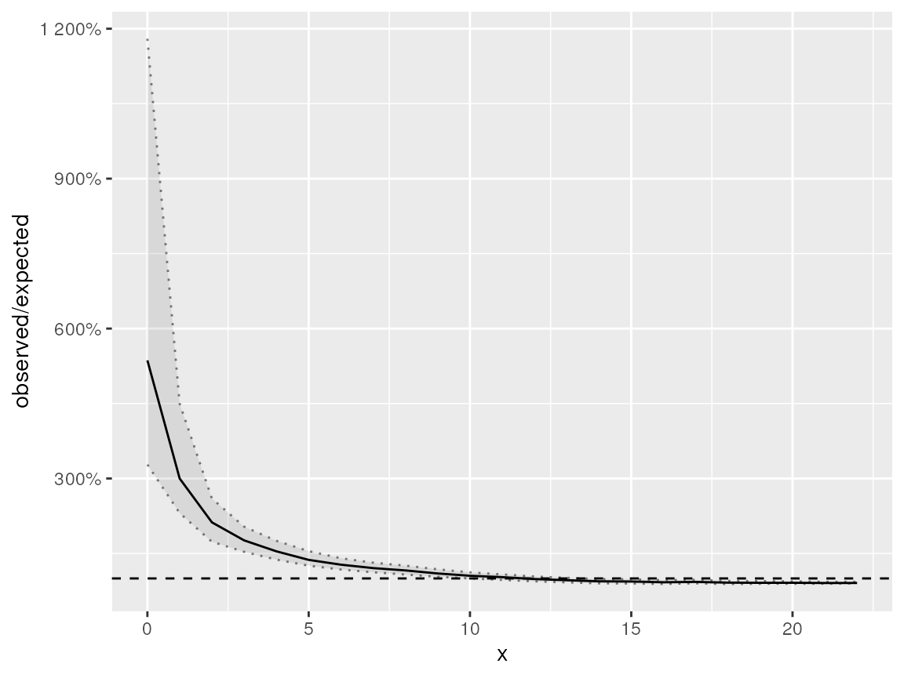
Distribution check on a negative binomial response which is modelled using a Poisson distribution
The plot from the distribution_check() is very similar
to that of the fast_distribution_check(). Notice that the
ratio observed / expected is (much) larger than 1 for low values of
x. The model with Poisson distribution doesn’t capture the
low response values very well.
plot(negbin_poisson_fdc)Fast distribution check on a negative binomial response which is modelled using a Poisson distribution
Let’s see what happens if we apply
fast_distribution_check() on the model with negative
binomial distribution and Poisson distribution with OLRE.
The distribution check of the model with negative binomial distribution
yields a plot where the envelope of the ratio observed versus expected
is always very close to the reference (1).
negbin_negbin_fdc <- fast_distribution_check(negbin_negbin_model)
plot(negbin_negbin_fdc)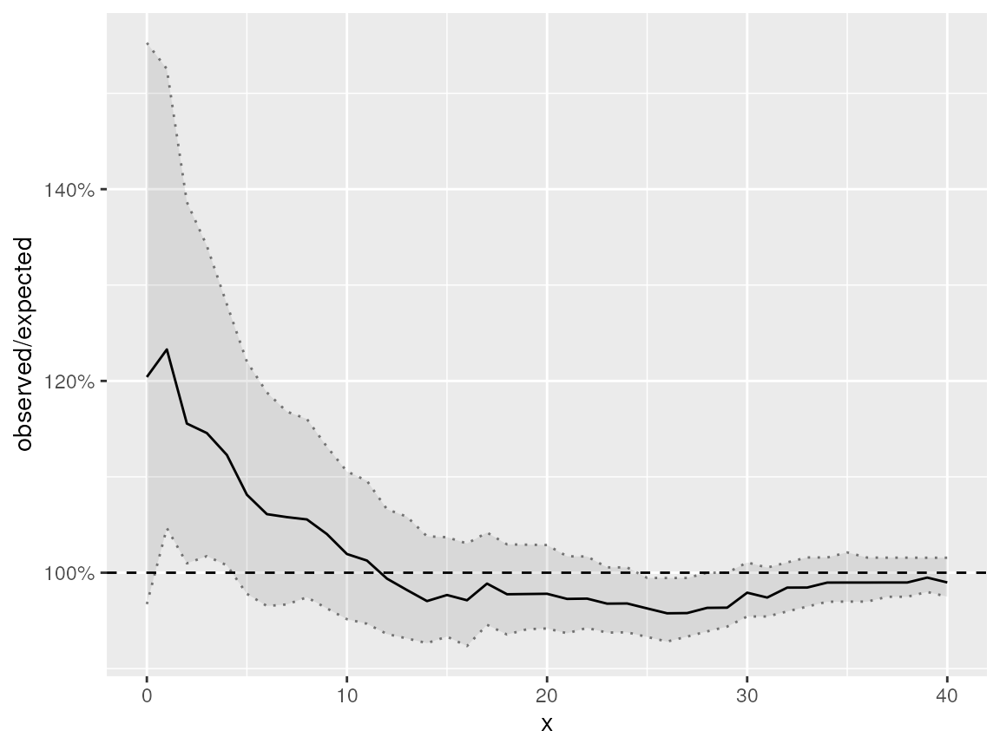
Fast distribution check on a negative binomial response which is modelled using a negative binomial distribution
Dispersion checks
The classics dispersion measure is to sum the squared Pearson residuals and divide them by the number of observations minus the degrees of freedom. This value should ideally be close to one. Values above one indicate overdispersion, while values below one indicate underdispersion.
The only agreement there is on number the degrees of freedom of mixed models, is that is hard to define them in a generic way. Therefore we take the simulation approach. Suppose we calculate the dispersion as the sum of the squared Pearson residuals divided by the number of observations and some degrees of freedom . We calculate this value for the observed data ().
Instead of comparing with some value, we simulate data from the model and for each of the simulated data sets we calculate the dispersion . Next we compare the value with the distribution of . If there is no over- or underdispersion, . When indicates underdispersion, while overdispersion.
Both and use the same values for and . Redefining as the average squared Pearson residuals , has no effect on the value of . Hence can omit from the formula and no longer need to worry about its “true” value.
dispersion_check() returns a list with two items: the
dispersion value based on the data (a single value in data)
and a vector of dispersion values for a number of simulated data sets
(model). The plot() function as a method to
handle this dispersion check object. It displays the density of the
dispersion of the simulated data sets. The vertical dashed line shows
the dispersion of the original data. The title contains
.
negbin_negbin_disp <- dispersion_check(negbin_negbin_model)
glimpse(negbin_negbin_disp)
#> List of 2
#> $ data : num 0.995
#> $ model: num [1:1000] 1.217 1.34 0.729 0.828 1.161 ...
#> - attr(*, "class")= chr "dispersion_check"
plot(negbin_negbin_disp)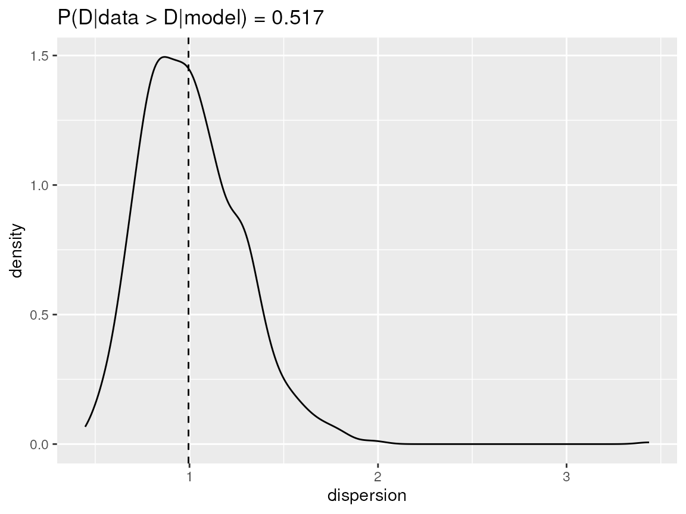
Dispersion check on a negative binomial response which is modelled using a negative binomial distribution.
The dispersion check of the model with the negative binomial distribution indicates no over- or underdispersion. The model with the Poisson distribution has clearly overdispersion.
negbin_poisson_disp <- dispersion_check(negbin_poisson_model)
plot(negbin_poisson_disp)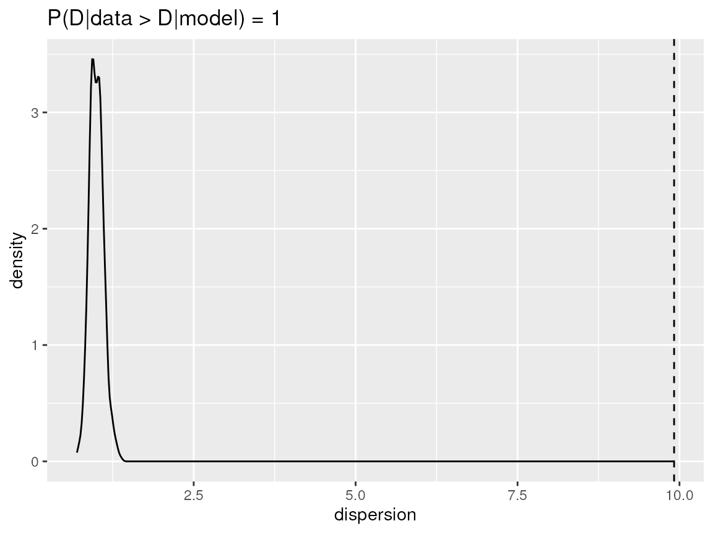
Dispersion check on a negative binomial response which is modelled using a Poisson distribution.
Zero inflation
Let’s see what happens if we do the same things for a zero inflated Poisson variable. We’ll fit the variable using a Poisson, negative binomial, zero inflated Poisson and zero inflated negative binomial distribution.
pcprior <- list(theta = list(prior = "pc.prec", param = c(1, 0.01)))
zip_poisson_model <- inla(
zipoisson ~ f(group_id, model = "iid", hyper = pcprior),
data = dataset,
family = "poisson",
control.predictor = list(compute = TRUE)
)
zip_negbin_model <- inla(
zipoisson ~ f(group_id, model = "iid", hyper = pcprior),
data = dataset,
family = "nbinomial",
control.predictor = list(compute = TRUE)
)
zip_zipoisson_model <- inla(
zipoisson ~ f(group_id, model = "iid", hyper = pcprior),
data = dataset,
family = "zeroinflatedpoisson1",
control.predictor = list(compute = TRUE)
)
zip_zinegbin_model <- inla(
zipoisson ~ f(group_id, model = "iid", hyper = pcprior),
data = dataset,
family = "zeroinflatednbinomial1",
control.predictor = list(compute = TRUE)
)
bind_rows(
zip_negbin_model$summary.fixed %>%
rownames_to_column("parameter") %>%
mutate(
distribution = "negative binomial",
zeroinflation = FALSE
),
zip_poisson_model$summary.fixed %>%
rownames_to_column("parameter") %>%
mutate(
distribution = "Poisson",
zeroinflation = FALSE
),
zip_zinegbin_model$summary.fixed %>%
rownames_to_column("parameter") %>%
mutate(
distribution = "negative binomial",
zeroinflation = TRUE
),
zip_zipoisson_model$summary.fixed %>%
rownames_to_column("parameter") %>%
mutate(
distribution = "Poisson",
zeroinflation = TRUE
)
) %>%
select(
distribution, zeroinflation, parameter,
mean, lcl = `0.025quant`, ucl = `0.975quant`
) -> summary_zip_fixed
bind_rows(
zip_negbin_model$summary.hyperpar %>%
rownames_to_column("parameter") %>%
mutate(
distribution = "negative binomial",
zeroinflation = FALSE
),
zip_poisson_model$summary.hyperpar %>%
rownames_to_column("parameter") %>%
mutate(
distribution = "Poisson",
zeroinflation = FALSE
),
zip_zinegbin_model$summary.hyperpar %>%
rownames_to_column("parameter") %>%
mutate(
distribution = "negative binomial",
zeroinflation = TRUE
),
zip_zipoisson_model$summary.hyperpar %>%
rownames_to_column("parameter") %>%
mutate(
distribution = "Poisson",
zeroinflation = TRUE
)
) %>%
select(
distribution, zeroinflation, parameter,
mean, lcl = `0.025quant`, ucl = `0.975quant`
) %>%
arrange(parameter, distribution, zeroinflation) -> summary_zip_hyperUsing a distribution without zero inflation adds a downward bias to the intercept.
| distribution | zeroinflation | parameter | mean | lcl | ucl |
|---|---|---|---|---|---|
| negative binomial | FALSE | (Intercept) | 1.47 | 1.16 | 1.78 |
| Poisson | FALSE | (Intercept) | 1.31 | 0.98 | 1.62 |
| negative binomial | TRUE | (Intercept) | 2.06 | 1.84 | 2.28 |
| Poisson | TRUE | (Intercept) | 2.06 | 1.84 | 2.28 |
We have set . This is equivalent with a precision of 1.778. All distributions lead to a large precision, so they all shrink the group effects. Note that the analyses are based on a very small dataset of only 200 observations and about half of them stem from the zero inflation part. The zero inflation probability is recovered very well. The size parameter of the negative binomial is very small when assuming no zero inflation. This indicates that it handles the zero inflation by increasing the variance. The zero inflated negative binomial has a very large size indicating that there is no overdispersion. Which is the case with a zero inflated Poisson response.
| distribution | zeroinflation | parameter | mean | lcl | ucl |
|---|---|---|---|---|---|
| negative binomial | FALSE | Precision for group_id | 14.31 | 1.99 | 63.30 |
| negative binomial | TRUE | Precision for group_id | 5.45 | 2.47 | 10.23 |
| Poisson | FALSE | Precision for group_id | 2.26 | 1.10 | 3.92 |
| Poisson | TRUE | Precision for group_id | 5.38 | 2.47 | 10.03 |
| negative binomial | TRUE | size for nbinomial zero-inflated observations | 846.44 | 32.67 | 5417.23 |
| negative binomial | FALSE | size for the nbinomial observations (1/overdispersion) | 0.37 | 0.28 | 0.49 |
| negative binomial | TRUE | zero-probability parameter for zero-inflated nbinomial_1 | 0.49 | 0.42 | 0.56 |
| Poisson | TRUE | zero-probability parameter for zero-inflated poisson_1 | 0.49 | 0.42 | 0.56 |
Dispersion checks
dispersion_check(zip_poisson_model) -> zip_poisson_disp
dispersion_check(zip_negbin_model) -> zip_negbin_disp
dispersion_check(zip_zipoisson_model) -> zip_zipoisson_disp
dispersion_check(zip_zinegbin_model) -> zip_zinegbin_dispUsing the Poisson distribution we get strong indications for overdispersion.
plot(zip_poisson_disp)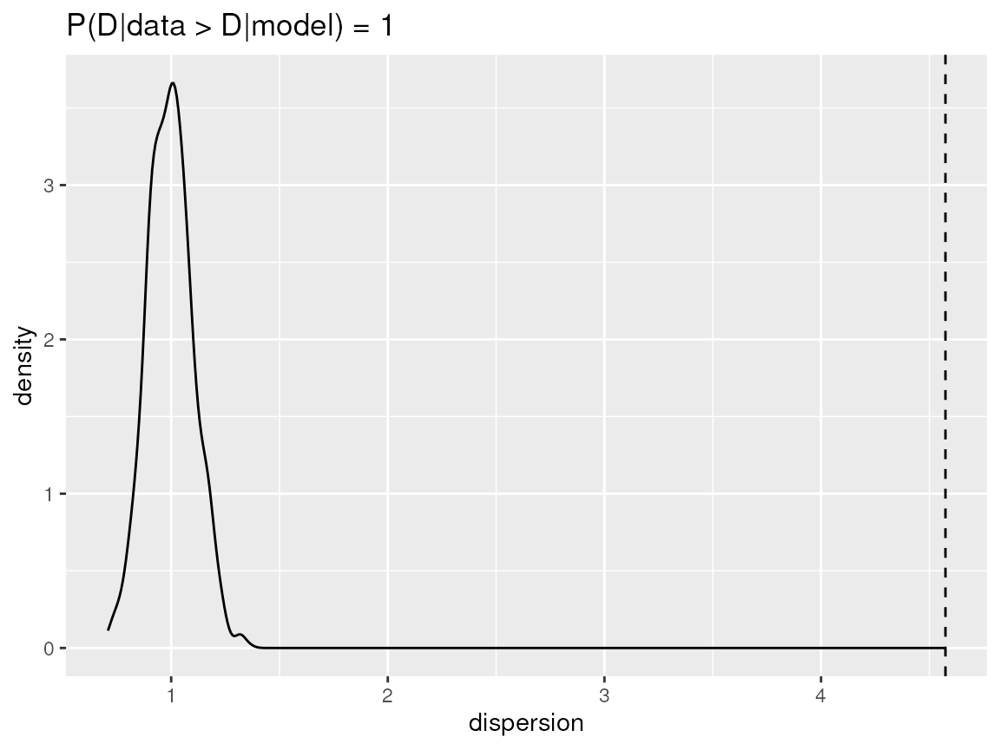
Dispersion check for a zero inflated Poisson reponse modelled with a Poisson distribution
The negative binomial distribution has a weak indication for underdispersion. More important, the range of dispersion values based on the simulation data is quite large.
plot(zip_negbin_disp)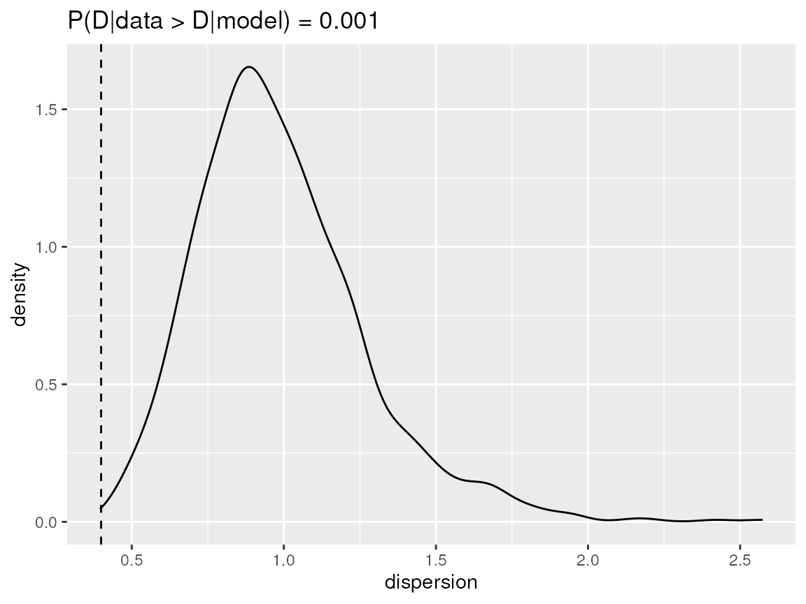
Dispersion check for a zero inflated Poisson reponse modelled with a negative binomial distribution
The dispersion checks on both the zero inflation Poisson and the zero inflated negative binomial models give a go-ahead. The observed dispersion is well within the range of the dispersion of the simulated data and that range is quite narrow.
plot(zip_zipoisson_disp)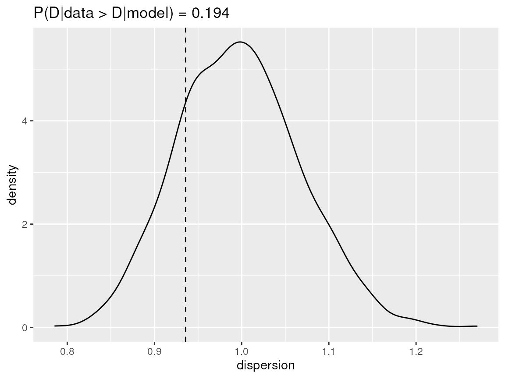
Dispersion check for a zero inflated Poisson reponse modelled with a zero inflated Poisson distribution
plot(zip_zinegbin_disp)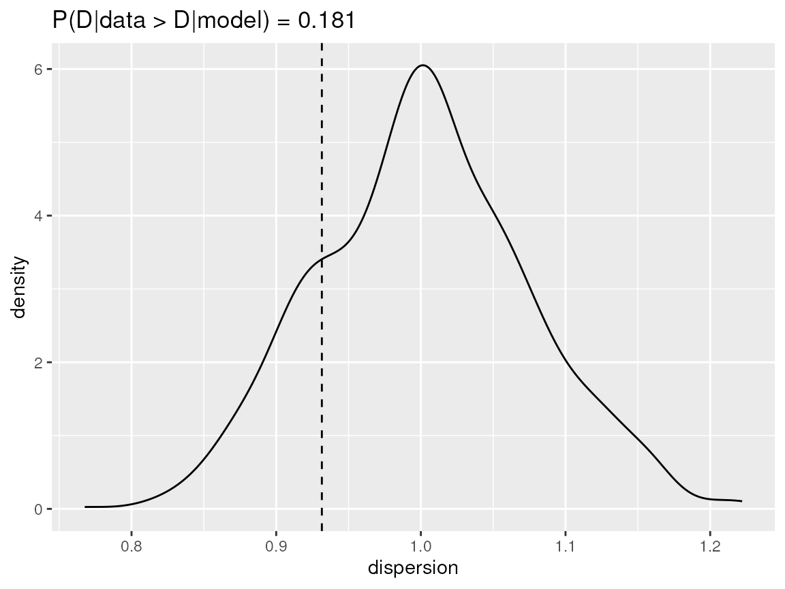
Dispersion check for a zero inflated Poisson reponse modelled with a zero inflated negative binomial distribution
Distribution checks
Another feature of the distribution checks is that they can handle a
list of models. The resulting data.frame gains a model
variables which contains the name of the list (or their index in case of
an unnamed list). Plotting the resulting check will create a subplot for
each model (using facet_wrap()). By default all subplots
will have the same scale. The strong ratio observed / expected for the
Poisson model will swamp all information of the other models. Therefore
we used scales = "free", resulting in a dedicated x and y
axis for each subplot.
list(
poisson = zip_poisson_model,
negbin = zip_negbin_model,
zipoisson = zip_zipoisson_model,
zinegbin = zip_zinegbin_model
) %>%
fast_distribution_check() -> zip_fdcThe plot for the Poisson model clearly indicates a problem with the (near) zero values, the data has much more of those than the model predicts. The negative binomial models is better at modelling the large number of zero’s but it fails on the small, non-zero values which are overrepresented by the model. Both the zero inflated Poisson and the zero inflated negative binomial models pass the distribution check with flying colours.
glimpse(zip_fdc)
#> Rows: 229
#> Columns: 7
#> $ x <dbl> 0, 1, 2, 3, 4, 5, 6, 7, 8, 9, 10, 11, 12, 13, 14, 15, 16, 17, 1…
#> $ median <dbl> 0.065, 0.190, 0.340, 0.480, 0.595, 0.690, 0.765, 0.820, 0.860, …
#> $ lcl <dbl> 0.035000, 0.144875, 0.285000, 0.425000, 0.545000, 0.644875, 0.7…
#> $ ucl <dbl> 0.100, 0.240, 0.395, 0.530, 0.645, 0.740, 0.805, 0.855, 0.890, …
#> $ n <dbl> 99, 1, 4, 6, 7, 6, 9, 12, 9, 12, 7, 4, 4, 4, 1, 0, 0, 2, 6, 0, …
#> $ ecdf <dbl> 0.495, 0.500, 0.520, 0.550, 0.585, 0.615, 0.660, 0.720, 0.765, …
#> $ model <chr> "poisson", "poisson", "poisson", "poisson", "poisson", "poisson…
plot(zip_fdc, scales = "free")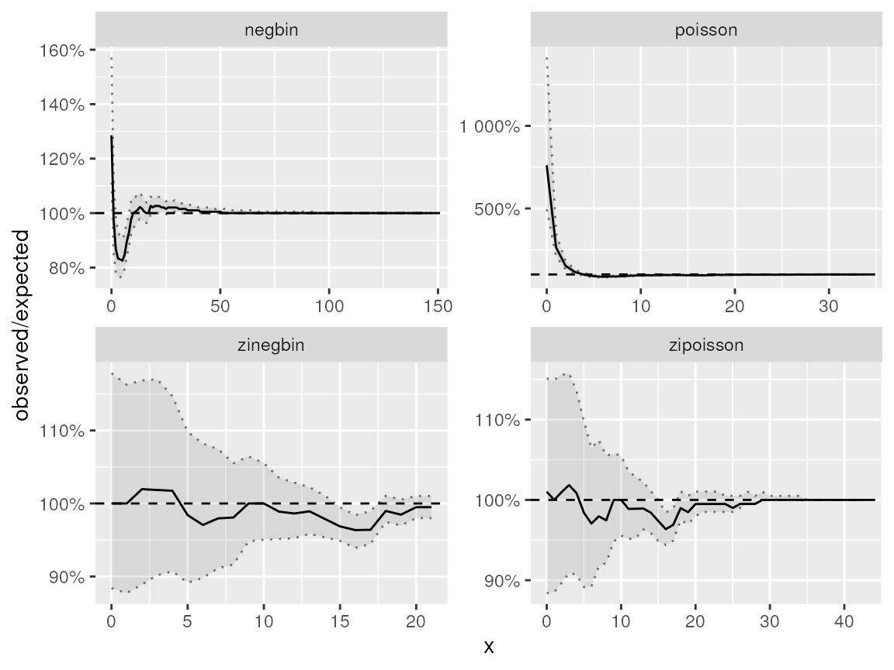
Fast distribution check on a zero inflated Poisson response which is modelled using several distributions
Underdispersion
generate_data() has a binomial variable. We use this as
an example for underdispersed data. The dispersion check clearly
indicates underdispersion. The distribution check has a ratio smaller
than 1 has low values.
binom_poisson_model <- inla(
binom ~ f(group_id, model = "iid"),
data = dataset,
family = "nbinomial",
control.predictor = list(compute = TRUE)
)
binom_poisson_disp <- dispersion_check(binom_poisson_model)
binom_poisson_fdc <- fast_distribution_check(binom_poisson_model)
plot(binom_poisson_disp)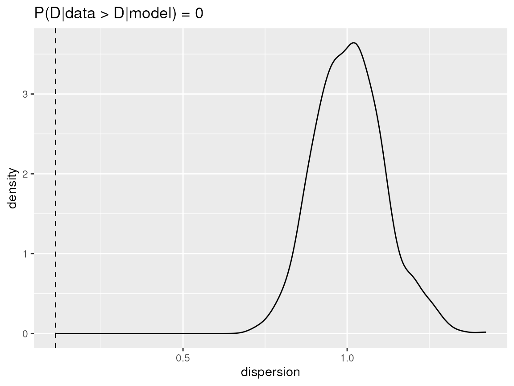
Dispersion check on a binomial response which is modelled using a Poisson distribution.
plot(binom_poisson_fdc)
#> Warning: Removed 1 row containing missing values or values outside the scale range
#> (`geom_line()`).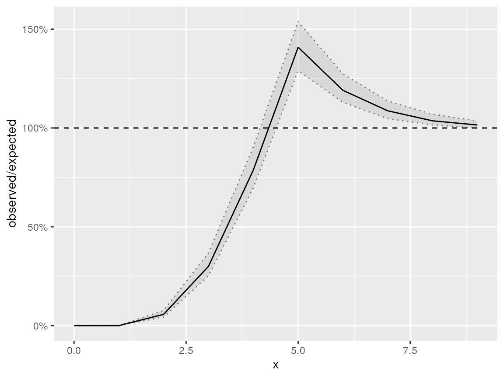
Fast distribution check on a binomial response which is modelled using a negative binomial distribution